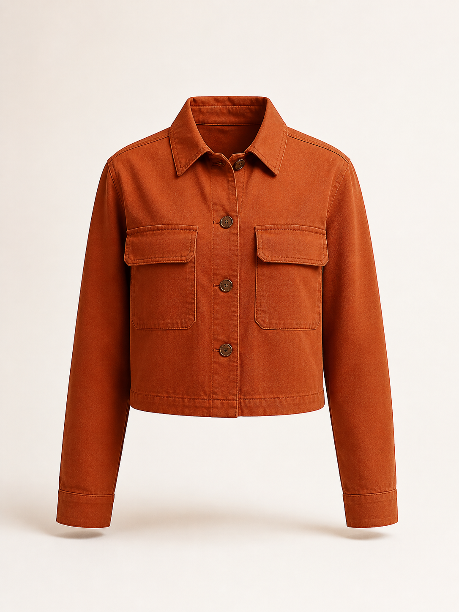
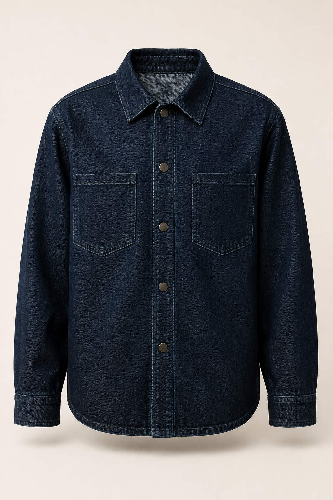
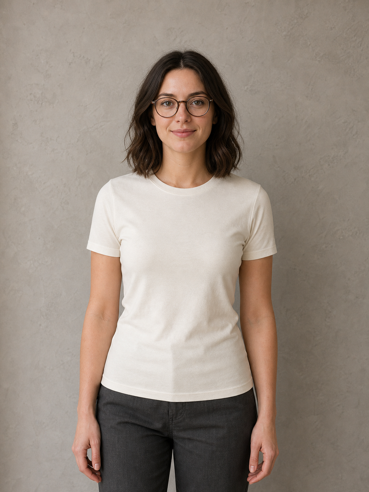
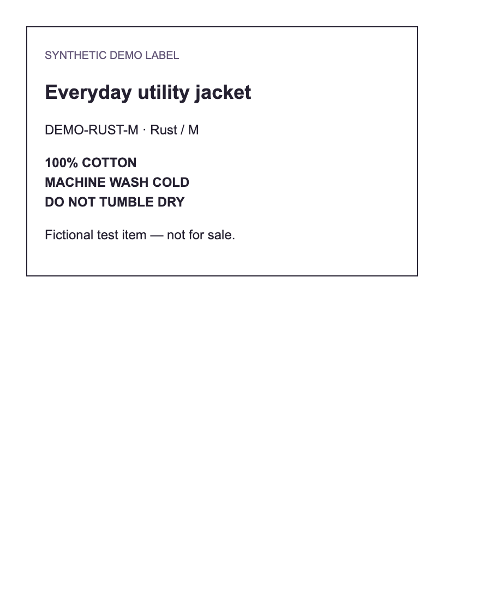
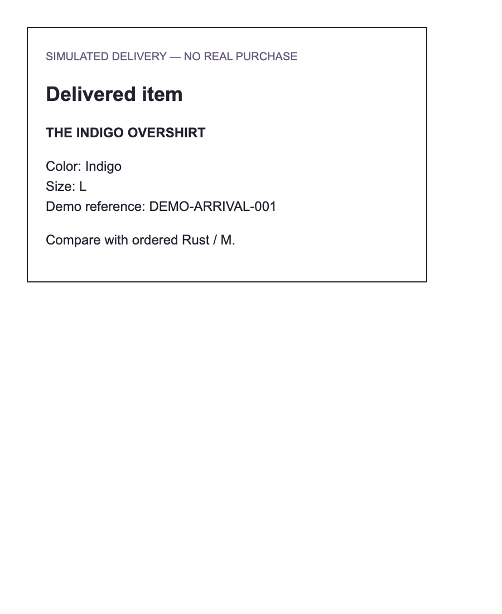
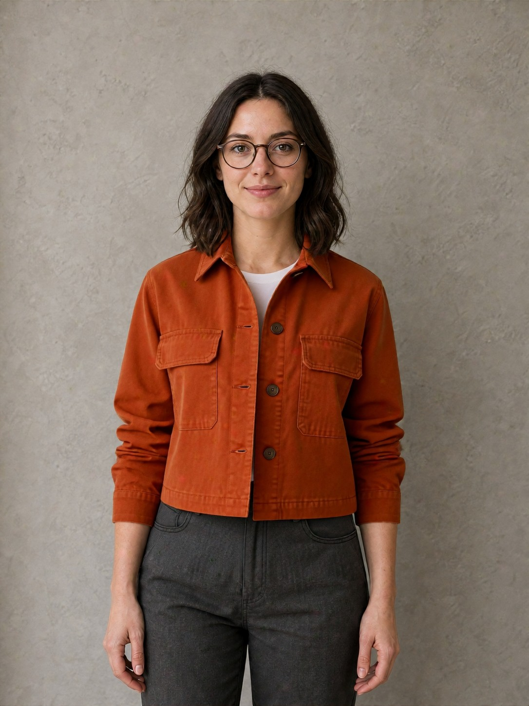
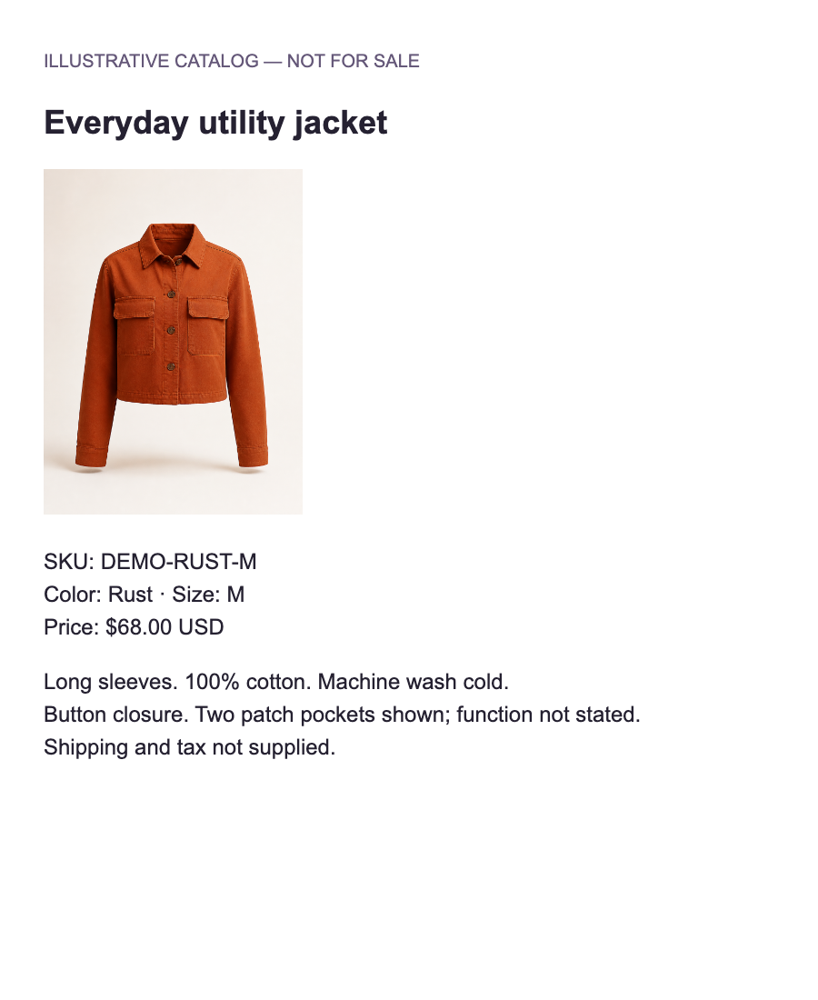

Rust jacket
Product 1 and YouCam garment
Download imageImages, copyable listings and a full walkthrough.
Download everything (.zip)Download full guideFictional products and synthetic test images. The recorded preview is an older YouCam output, not your new generation.

Product 1 and YouCam garment
Download image
Product 2 and simulated arrival photo
Download image
YouCam person photo
Download image
OCR test document
Download image
Arrival mismatch test document
Download image
Reference only — not a new result
Download image
Transcription test document
Download imageItem name: Everyday utility jacket Brand: Illustrative catalog Retailer: Demo listing — not for sale SKU: DEMO-RUST-M Color: Rust Size: M PASTE ONLY THE FOLLOWING INTO LISTING TEXT: Illustrative demo listing: Everyday utility jacket, Rust, size M. Long sleeves. 100% cotton. Machine wash cold. Button closure. Two patch pockets are shown; their function is not stated. Price: $68.00 USD. Shipping and tax are not supplied. This is a fictional test item, not an Amazon listing.Download text
Item name: The indigo overshirt Brand: Illustrative catalog Retailer: Demo listing — not for sale SKU: DEMO-INDIGO-M Color: Indigo Size: M PASTE ONLY THE FOLLOWING INTO LISTING TEXT: Illustrative demo listing: The indigo overshirt, Indigo, size M. Long sleeves. 80% cotton, 20% polyester. Dry-clean only. Functional pockets. Button closure. Price: $79.00 USD. Shipping and tax are not supplied. This is a fictional test item, not an Amazon listing.Download text
SIMULATED SELLER REPLY — use only in the demo: For DEMO-RUST-M, Rust / M: the jacket has functional pockets. Machine wash cold. OPTIONAL CONFLICT TEST — paste as a separate reply: For DEMO-RUST-M, Rust / M: dry-clean only. Reason for excluding the conflicting source: Demo seller supplied instructions for the wrong variant.Download text
SIMULATED ARRIVAL CHECK — no real purchase occurred: Ordered: Everyday utility jacket, Rust / M. Delivered label: Indigo / L. The sample delivery label says Indigo / L, while the saved order is Rust / M. Please clarify whether the correct item was sent. Use 02-indigo-overshirt.png as the delivered-item demo image and 05-delivery-label.png as the private delivery-label attachment. The photograph alone does not prove its size or a defect.Download text
# AsShown complete demo kit All product descriptions and shopping scenarios are fictional. The person is a synthetic demo shopper. The recorded preview is an older real YouCam result, not a fresh generation. These are the app’s existing demo assets; do not present them as verified retail products, real purchases or independent community reviews. ## Files | File | Use | | --- | --- | | 01-rust-jacket.png | First product photo; use this garment for YouCam | | 02-indigo-overshirt.png | Second product photo; optional simulated delivery photo | | 03-synthetic-shopper.png | Person photo in the live YouCam studio | | 04-care-label.png | Synthetic care-label OCR test | | 05-delivery-label.png | Synthetic arrival label / private evidence attachment | | 06-recorded-preview-reference.jpg | Older recorded YouCam output, reference only; do not upload as the person or claim it is your new result | | 07-listing-screenshot.png | Synthetic product-page screenshot for manual transcription or the existing OCR tool | | 01-rust-listing.txt / 02-indigo-listing.txt | Form values and copyable listing text | | 03-seller-reply.txt | Supporting reply and optional conflicting reply | | 04-arrival-observations.txt | Copyable arrival mismatch observations | The HTML cards are the source documents for the generated screenshot fixtures. No screenshot-to-form autofill is implemented: the existing OCR tool produces text for review. ## 1. Check the first item 1. Open the current AsShown preview, then **Check an item**. Start a fresh workspace or delete previous demo data in **Privacy & data** first. 2. Fill the form using `01-rust-listing.txt` and upload `01-rust-jacket.png` under **Choose product photos**. 3. Confirm Rust / M, check the source confirmation box, and select **Confirm sources**. 4. Keep three requirements: **Machine washable**, **Long sleeves**, **Functional pockets**. Make washing and pockets essential; sleeves can be preferred. 5. Open **3. Evidence & decision**. Expected: washing and sleeves are supported; functional pockets remain unknown. The image alone must not turn pockets into a supported claim. 6. Copy the simulated supporting reply from `03-seller-reply.txt` into **Paste the seller’s reply**, then **Add reply as evidence**. Functional pockets should become supported. 7. Optional: add the conflicting reply. Care should show conflicting evidence. Open **Review and correct source use**, enter the provided reason, and exclude the incorrect reply. The original source must remain visible. ## 2. Compare and save 1. Add a second item using `02-indigo-listing.txt` and `02-indigo-overshirt.png`. 2. Confirm Indigo / M and open **Your shortlist**. Compare both items using the same requirements. 3. Expected: the indigo item conflicts with machine washing; functional pockets and long sleeves are supported. The rust item has no care conflict. 4. Select **Approve & save report**, then **Saved checks** → **Export**. Change a requirement afterward: the old saved report must remain unchanged. 5. In **Your requirements**, save a named profile such as “Everyday clothing”; try applying it again. ## 3. Run the real YouCam preview 1. Return to **Check an item**, select the rust item, open **4. YouCam preview**, then **Open preview studio**. 2. Select **Live virtual try-on** if it is not already selected. Ensure the garment shown is the rust jacket. If the tab was refreshed and the photo was lost, upload `01-rust-jacket.png` again. 3. Upload `03-synthetic-shopper.png` as the person photo. Do not upload the care label, delivery label or recorded preview here. 4. Continue to the appearance contract. Keep the face, skin, hair, background and glasses protections. Add a preserve zone around the glasses if desired. 5. Read and select the processing consent, then **Approve & generate**. This makes a real YouCam request and uses provider units; avoid repeatedly clicking or starting new sessions. 6. Wait for the task. Compare the original and generated result. Results vary; do not expect identical pixels to `06-recorded-preview-reference.jpg`. 7. If verification permits approval, approve the result and download its receipt. If it is inconclusive or blocked, retain that outcome rather than claiming a pass. 8. Delete the studio session after testing. Confirm the application’s deletion result. Provider retention is separate. For a repeatable no-generation alternative, choose the studio’s **guided demo**. It uses built-in synthetic fixtures to show glasses drift, repair and a demo receipt. Do not describe it as a new live YouCam generation. ## 4. Test arrival review and export 1. Return to the shopping workspace and select the rust item. Open **Arrival check**. 2. Enter delivered color **Indigo** and size **L**. The ordered Rust / M must stay unchanged and a mismatch should appear. 3. Paste `04-arrival-observations.txt`’s observation sentence. Review and confirm the delivered variant. 4. Use the indigo garment image as a simulated delivered photo. Attach `05-delivery-label.png` to the evidence package if requested. 5. Review the export acknowledgments, then export the editable seller-message draft and evidence package. Check that ordered and delivered variants, original listing and selected images are included. 6. Change delivered size again: the review confirmation must reset. No message is sent automatically. ## 5. Optional account, OCR and community paths - **Account storage:** Sign in, save the workspace and a private product photo, reload, and load the saved version. Unsaved guest photos clear on refresh; saved private originals have an expiry shown in the app. - **OCR:** Save `04-care-label.png` in the private evidence library, select it for transcription, consent to processing and review the extracted text. Expected words: “100% COTTON”, “MACHINE WASH COLD”, “DO NOT TUMBLE DRY”. Suggestions require review; extraction can vary. - **Listing screenshot:** Use `07-listing-screenshot.png` for manual transcription or the existing account OCR tool. It is not a live retailer import. - **Language:** Try “Machine washable is essential. Long sleeves are preferred.” in language assistance. Confirm the interpreted rules before applying them. Try Spanish translation and check that prices and percentages are unchanged. - **Community:** Use a signed-in test account and clearly prefix any test note with “DEMO — fictional product”. Keep it pending; do not publish it as a real experience. Test correction and withdrawal, then clean up. Public publication requires an authorized moderator. Do not attach the shopper photo or receipt to a public product note. - **Privacy:** Export workspace data and then delete it. Reload to verify it remains empty. Delete account storage separately if used, and verify studio deletion separately. ## Expected checkpoints - Rust: supported care / supported sleeves / unknown pockets before the seller reply. - Indigo: care conflict / supported sleeves / supported pockets. - Seller reply can resolve unknown pockets; a conflicting reply does not erase earlier wording. - Arrival Indigo / L differs from ordered Rust / M; export requires review. - YouCam status and receipt reflect the actual run; no guaranteed verification pass. - Guest deletion and studio deletion are separate actions. A fresh provider generation was not run merely to package these files. Earlier real-provider demo evidence exists in the project’s `artifacts/live-demo` folder.